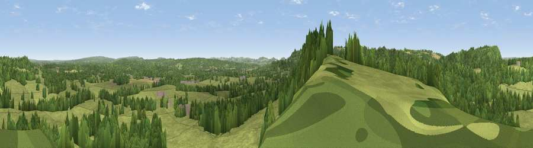

Viewpoint near Empshott
#23578 in England · top 31% of its area beats it · near EmpshottWhere it is
The exact computed spot (SU 75775 29975). Click the marker for map links.
The view, rendered

A 360° render of this exact spot computed from the terrain model, tree cover and land cover — summer colours, afternoon light, calibrated against photographs of famous viewpoints. Real trees, hedges and buildings will differ in detail.
The panorama
Grey silhouette: terrain skyline in each direction (720 bearings, Earth curvature and refraction included). Dashed green: skyline with trees (+15 m) and buildings (+8 m) as obstacles. Blue strip: how far the ground is visible on each bearing.
Where the view opens
Wedge length = distance to the farthest visible ground on that bearing (vegetation-aware). Rings at 10, 25 and 50 km.
What fills the view
55% grassland · 41% woodland · 2% cropland ·
Angular shares of the visible panorama (visual magnitude), not map area. Landscape diversity 0.36 (0–1 Shannon).
Key numbers
More beautiful places nearby
The staircase of upgrades: each row has a higher view potential than everything closer. Driving times are estimates from straight-line distance, calibrated against real road routing — check an actual route before setting out.
| Place | Direction | Drive | Score |
|---|---|---|---|
| Viewpoint near Empshott | NW · 2 km | ~5 min | 53.6 |
| Noar Hill | NNW · 2 km | ~5 min | 62.3 |
| Viewpoint near Steep | SSW · 3 km | ~7 min | 68.7 |
| Viewpoint near Buriton | SSW · 10 km | ~20 min | 75.3 |
| Viewpoint near Buriton | SSW · 10 km | ~20 min | 80.0 |
| Beacon Hill | SSE · 13 km | ~23 min | 85.8 |
| Chanctonbury Ring | ESE · 42 km | ~62 min | 87.0 |
| Viewpoint near St. Lawrence | SSW · 57 km | ~79 min | 88.2 |
51.06412, -0.92002 · source: screening · position refined by local search. Computed location — check access rights before visiting.